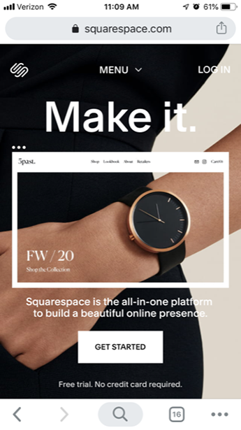
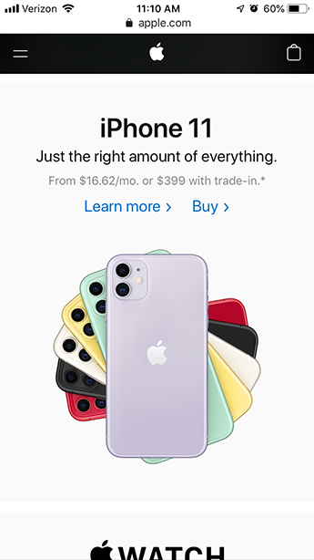

Visual Hierarchy
Urban Decay
It is very clear that on the homepage of Urban Decay’s website that they want you to know they have 20% off right now with free shipping. The 20% is the biggest thing we can see and being the color white, it stands out amongst everything else on the page. They used visual hierarchy to show what they want you to look at first. The shop now button stands out next, followed by the banner at the top that again says there is 20% off with free shipping.
Rule of Thirds
Square Space
The photo is a great example of the rule of thirds. Whether you are looking at the entire background image, or just what is inside the frame, the picture of the watch is much more interesting than if it was just placed in the center. It fits right on the right vertical gridline.
White Space and Clean Design
Apple
When I think of websites that have white space and a clean design I immediately think about Apple’s website. They don’t feel a need to fill up every space on the page and it leaves a very clean and simple design. Everything on the site is visually appealing and because there is some white space, it isn’t stressful to look at.